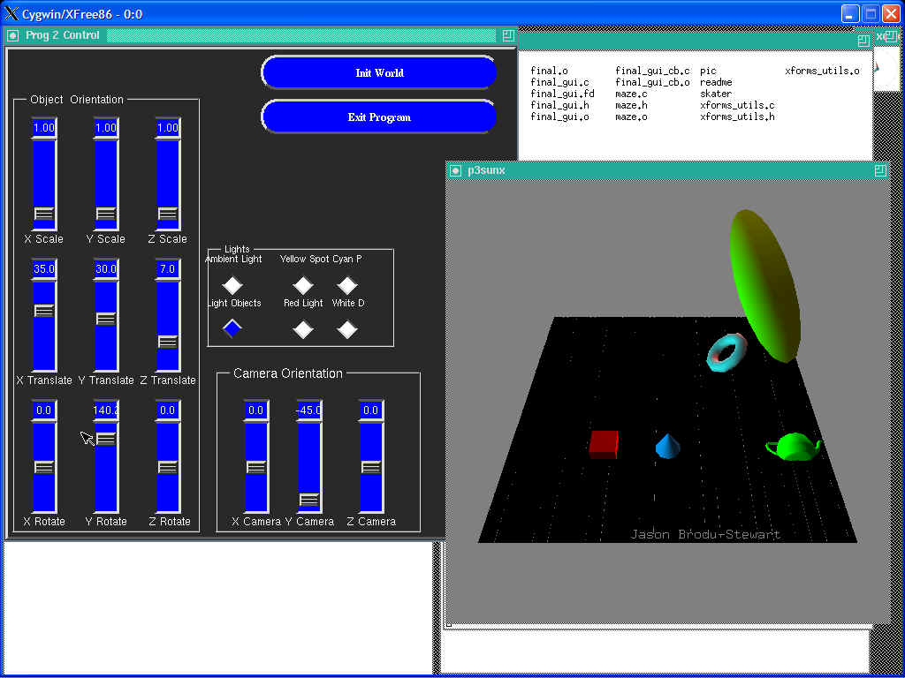

Jason Brody-Stewart
Programming assignment 3
Purpose-To learn how to independently pick objects, and with those picked objects,
independently translate, scale and rotate them.Main files-disp_utils.c, formd.c, Makefile, maze.c, prog3.c, prog3_gui.c,
prog3_gui.fd, prog3_gui_cb.c, xforms_utils.cdisp_utils.c-Makes all the openGL calls does the actual drawing. I had to
add a lot of function to this file.formd.c-File used by fdesign to create gui.
Makefile-File used to compile the program. Must be in the following
syntax [make sun_xforms].maze.c-File were all world manipulations are done. This is where I wrote
the procedures that the buttons called in order to do the various tasks on the world.prog3.c-File where the program runs from. Does any reading of argument passed in order to change the window size. It also starts up xforms and Glut.
prog3_gui.c-gui generated with fdesign
prog3_gui.fd-file used by fdesign to create gui
prog3_gui_cb.c-file that contains the calls to perform tasks that your buttons should perform.
xforms_utils.c-file where all your xforms stuff is done.
Running Program
To compile the program type "make". To run my program type "p3sunx". Once The program is running you can use the gui to change various things. As a
default all lighting is turned on, and the light object button is off. The light object button turns on wire spheres at the location of the light. By default the eye is too close to see all lights. If you click in the display window you can reset the scene by typing the 'i' key. I set up the sliders so that they give the world coordinates, this way it is quite difficult to move the objects out of the world. So as you change between objects the sliders also change(update).
Problems
I had problems drawing the spheres where the lights are, that is why I have the position of the lights done after the redraw_maze() in my displayFunc().
